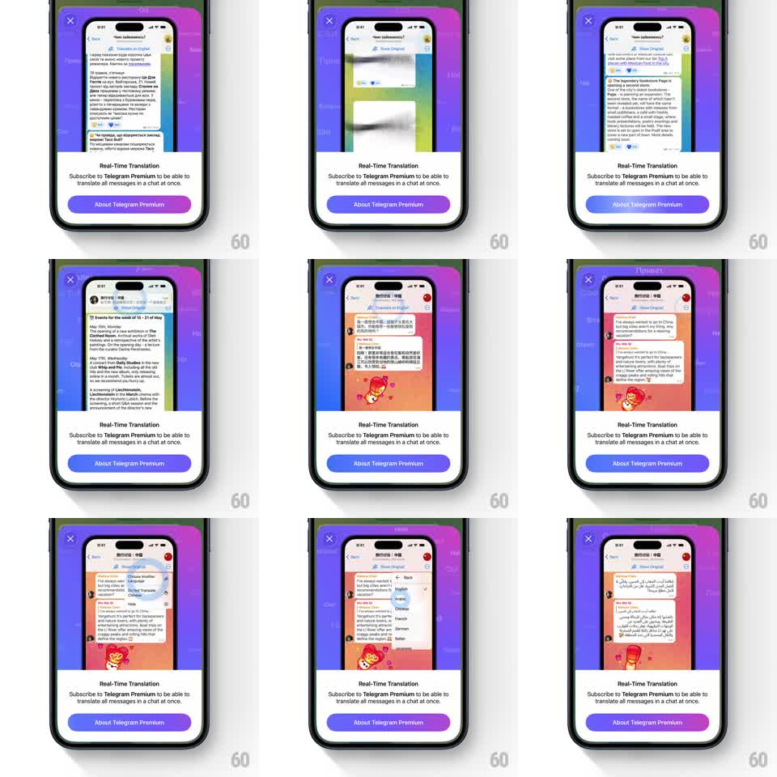

Media
Frame-by-frame

Rebuild this animation 1:1: Telegram's Real-Time Translation promo sheet - a looping mini chat above the sheet where messages flip between languages (Russian, English, Chinese) while the sheet below sells the Premium feature.

Rebuild this animation 1:1: Telegram's Real-Time Translation promo sheet - a looping mini chat above the sheet where messages flip between languages (Russian, English, Chinese) while the sheet below sells the Premium feature. ## Integration Integration: stack-agnostic spec - springs given as stiffness/damping, timed motions as duration + curve; map every value to your framework and animation library of choice. ## Scene A bottom sheet on a purple gradient: close X top left; inside, a phone-frame preview of a Telegram channel with a "Translate to English" banner; below the preview, "Real-Time Translation", "Subscribe to Telegram Premium to be able to translate all messages in a chat at once.", and an "About Telegram Premium" button. The preview loops a chat in different languages. ## Motion spec Pattern: looping chat simulation with language-flipping messages inside a device frame. - The sheet slides up once (spring ~320/20); everything after is the loop. - Chat messages bubble in from the bottom one at a time (translateY 20 -> 0, fade, 250ms, 400ms apart), building a short conversation in one language (e.g. Russian). - Hold ~1.2s, then the messages translate: each bubble's text crossfades to the new language (200ms) with a subtle height reflow, top message first with a 100ms cascade downward; the "Show Original" chip toggles its label. - The cycle continues through languages (Russian -> English -> Chinese -> ...) with the chat frame's gradient background shifting hue per language (600ms color tween). - The loop is seamless: after the last language, the conversation clears (bubbles slide down and out, 300ms) and the first language's chat starts again. ## Calibration - The preview is a real chat layout - avatars, bubble tails, timestamps - just miniature. - Translation flips must preserve bubble structure - only the text changes. ## Reduced motion Messages fade in place; language switches crossfade (250ms) without the cascade. ## Don't miss - The "Translate to English" banner persists at the preview's top through every language. - The sheet's copy and button never animate - only the preview loops.